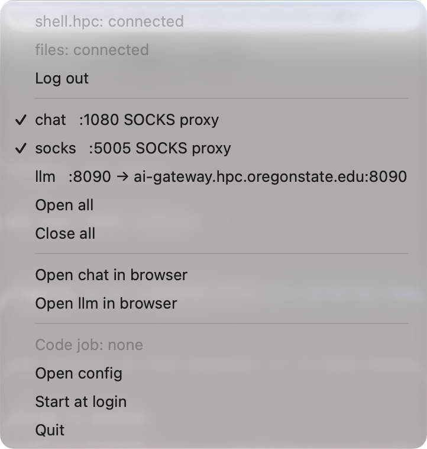

For HPC users
Use apps on compute nodes from your laptop
hpctun lets you open Jupyter, RStudio Server, Shiny and other web apps running in your cluster jobs in your own browser, copy files to and from the cluster, and run VS Code inside a Slurm job, without writing ssh commands. It uses the ssh already on your computer; tunnels and copies need nothing installed on the cluster.
hpctun cp and rsync to the cluster's shared filesystem, with Tab completion of remote paths.Why use it
Compared with what you do now
Everything hpctun does can be done with plain ssh, and hpctun runs plain ssh underneath. It saves you remembering the commands and cleaning up after them.
| If you now… | With hpctun |
|---|---|
type ssh -L 8888:localhost:8888 -J you@login… you@node42 to reach Jupyter |
hpctun up jupyter. hpctun status lists what is open; hpctun down closes it. No stray ssh processes to hunt for. |
| approve a 2FA prompt for every terminal, copy and tunnel | One login is shared by tunnels, ssh, scp and rsync. hpctun ssh-config key sets up key login, which at some sites (OSU included) skips 2FA. |
copy with scp to the login node, typing remote paths from memory |
hpctun cp goes to the transfer node (faster link, same files), and Tab completes remote paths. |
| lose your tunnels when the laptop sleeps or the Wi-Fi changes | hpctun up --all, or one click in the menu bar, puts them all back. |
| use Open OnDemand | Keep using it for the apps it offers. hpctun covers what it doesn't: your own Shiny app or dashboard, any port, in your own browser. |
| use VS Code Remote-SSH to the login node | hpctun code runs VS Code's server inside your own Slurm job, so your terminals and language servers use the job's CPUs, not the shared login node. |
| turn on the VPN to reach a campus-only website | hpctun browse opens one browser window that goes through the cluster; the rest of your traffic is unaffected. |
edit ~/.ssh/config by hand, or copy someone else's |
hpctun init asks a few questions and shows the changes before writing them. |
The network
How a cluster is usually laid out
Compute nodes sit on a private network. From the internet you can reach the machines on its edge: the login node and the transfer node.
Port forwarding
What a tunnel does
A tunnel (an ssh port forward) makes a port on a compute node appear as a port on your laptop. The traffic travels inside the ssh connection to the login node, which passes it on.
hpctun opens the forward, records it, shows it in hpctun status, reopens it
after a sleep or network change, and closes it.
$ hpctun up 8888 --host node42 --loopback $ open http://localhost:8888 # Jupyter, from your laptop $ hpctun down 8888
One login
One shared connection
hpctun sets ssh up so everything shares one connection to the login node. Tunnels,
ssh sessions, scp and rsync all ride the connection
that is already open, so you type your password and approve 2FA once.
Separate connections: a login each
Shared connection: one login
The shared connection stays open in the background. If it drops (the laptop slept, the
Wi-Fi changed, the VPN reconnected), hpctun up --all reopens it and puts back
every tunnel. With an ssh key, which hpctun ssh-config key sets up for you,
there is no password to type, and some sites (OSU among them) skip the 2FA prompt too. While it is open, any program running as you on your computer can use it without a password or 2FA; hpctun logout closes it.
Routes
Apps that listen on localhost only
Many apps, Jupyter included, accept connections only from the machine they run on
(127.0.0.1, “localhost”). The login node can't connect to those, so the
tunnel has to continue to the node itself. In practice: if a tunnel to Jupyter
opens but the page doesn't load, add --loopback. For an app you start yourself, start it on 127.0.0.1 and use --loopback: then the rest of the cluster cannot reach it.
Direct: the login node connects to the app
Through: ssh continues on to the node itself
127.0.0.1 and add --loopback (or route = "jump" in the config). To check an existing app, run ssh node42 ss -ltn | grep 8888: 127.0.0.1:8888 means localhost only, so add --loopback; 0.0.0.0:8888 or *:8888 means the direct route works, but also that other cluster users can reach the app, so make sure it asks for a password or token.
Files
Copying files
Copies go to the transfer node. It has the faster external link and sees the cluster's shared, networked filesystem: the same home, lab and project folders as every compute node.
Copy to and from the shared filesystem
Your home, lab and project folders, the same ones every compute node sees. hpctun cp, hpctun rsync and hpctun sftp take the usual scp, rsync and sftp arguments, with the ssh setup already done.
$ hpctun cp results.tsv files:/lab/project/run1/ $ hpctun rsync -av files:/lab/project/run1/plots/ plots/ $ hpctun sftp files
Tab completes paths on the cluster
Press Tab after a remote path and the shell lists what is there, just as it does for files on your laptop. The listing uses the connection that is already open, so it never asks you to log in. Turn it on once with hpctun completion zsh --help (or bash, fish).
$ hpctun cp files:/lab/project/<Tab> run1/ run2/ samples.tsv README.md $ hpctun cp files:/lab/project/run1/<Tab> counts.tsv multiqc_report.html plots/
Bonus: a node's own disk.
For files on one node's local /scratch, hpctun cp node7:/scratch/you/run.log .
hops through the transfer node for you (it runs scp -J files … and prints it).
This needs ssh access to that node, which some clusters allow only while you have a job there.
Browser
Opening a tunnel's page
hpctun browse opens the tunnel if it is not up yet, then opens the page. A
port forward opens in your usual browser. A SOCKS proxy tunnel opens a separate
browser window that sends its web traffic through the cluster (it still reaches localhost on your laptop directly), which is useful for sites that
only answer on campus. Other browser windows are not affected.
$ hpctun browse jupyter # http://localhost:8888 in your usual browser $ hpctun browse proxy # a proxied window on the tunnel's saved page $ hpctun browse proxy https://intranet.example.edu
VS Code
VS Code in a Slurm job
hpctun code gets you a Slurm job, starts VS Code's tunnel inside it, and opens
VS Code on your laptop connected to that job. Terminals, language servers and notebook
kernels run on the compute node, not on the shared login node.
$ hpctun code project # ~/project on the cluster, in a job of your own $ hpctun code -- --gres=gpu:1 # anything after -- goes to sbatch $ hpctun code --status # the job, its node and time left $ hpctun code --stop
The job keeps running when you close VS Code, and running hpctun code again
reconnects to it. Your files are on the cluster the whole time.
The first time on each computer, hpctun shows the VS Code Server License Terms and asks you to accept them. Your editor reaches the job through Microsoft's dev tunnels service, which your files, terminals and edits pass through; check your institution's rules before working with restricted data this way.
Optional
Menu-bar app
hpctun-tray puts your tunnels in the macOS menu bar, the Linux system tray or the Windows notification area.
Log in, open or close each tunnel, open a tunnel's page in the browser, and see your
VS Code job, without a terminal. A password or 2FA prompt appears in a small window,
and hpctun never stores what you type.
The icon tells you the state at a glance:
- every tunnel is up
- logged in, some tunnels down
- not logged in
- something is wrong

(add
site/img/tray-menu.png)Commands
Plain ssh and hpctun side by side
Plain ssh
One command per forward; closing one means finding its process.
ssh -N -f -L 8888:localhost:8888 \
-J you@login.cluster.edu you@node42
ssh -N -f -L 8787:node41:8787 you@login.cluster.edu
# later: which of these is still running?
ps aux | grep 'ssh -N'
lsof -i :8888
kill 48213
With hpctun
Tunnels are named once in a config file and used by name.
hpctun up --all # safe to re-run
hpctun status
hpctun browse jupyter
hpctun down --all
hpctun status answers “what's open, where does it go, is anyone using it?”:
gateway login: running (pid 86660, ssh-config) transfer files: connected (pid 86811) NAME PORT ROUTE TARGET STATE CONNS jupyter 8888 jump node42:8888 up 3 rstudio 8787 master node41:8787 up 1 proxy 1080 socks - up 5 shiny 3838 master node43:3838 down -
Tunnels are named once in a short config file. hpctun add asks the questions for
you, or you can open one ad hoc (hpctun up 8888 --host node42 --loopback) and
save it if you want to keep it.
# ~/.config/hpctun/config.toml gateway = "login" default_host = "node42" [tunnel.jupyter] port = 8888 route = "jump" # Jupyter listens on localhost only [tunnel.rstudio] port = 8787 host = "node41" [tunnel.proxy] socks = 1080 url = "https://intranet.example.edu"
Scope
What it touches
Every connection is made by your own OpenSSH. Your keys, agent and ~/.ssh/config apply. hpctun never stores a password: its password window (menu-bar app, --askpass) only passes what you type on to ssh.
Tunnels and copies need no server, daemon or admin request: if you can ssh to the login node, hpctun works. hpctun code runs VS Code's server in your own Slurm job and keeps its sign-in in your cluster home.
Changes to your ssh setup are shown as a diff and written only when you say yes, with a backup. Your own host entries are left alone.
status looks at what is really listening every time it runs, so it can't drift from reality. Tunnels it didn't open are shown and never touched.
Runs on macOS, Linux and Windows. On Windows, OpenSSH has no shared connection, so each tunnel is its own ssh and signs in with a key from the ssh agent; hpctun login checks that it can.
Tunnel ports on your computer have no password of their own: any program on it can use them, so keep your apps' own logins on. Releases are signed, and hpctun self-update checks the signature before installing anything. The README's “Security notes” say more.
hpctun is written with AI coding agents (Claude Code, with reviews by Codex) under its maintainer's direction, and had a security review before its first public release. See “How hpctun is made” in the README.
At Oregon State
hpctun on the OSU HPC cluster
The release comes with osu.toml, which fills in OSU's hosts for you. The
setup wizard asks for your ONID username and little else.
shell.hpc.oregonstate.edushell: logins, jobs, tunnelsfiles.hpc.oregonstate.edufiles: copies, node-local /scratchchrom1-
Get the release
# Apple silicon Mac; see the releases page for other systems $ v=$(curl -fsSL https://github.com/davised/hpctun/releases/latest/download/VERSION) $ curl -fLO "https://github.com/davised/hpctun/releases/download/$v/hpctun-$v-darwin-arm64.tar.gz" $ tar xzf hpctun-$v-darwin-arm64.tar.gz $ cd hpctun-$v-darwin-arm64 && mkdir -p ~/.local/bin && mv hpctun ~/.local/bin/ $ export PATH="$HOME/.local/bin:$PATH"
On a Mac,
hpctun-tray-<version>-darwin-universal.zipis the menu-bar app with hpctun inside. Usecurl, not a browser: macOS blocks unsigned programs that a browser downloaded. To keep~/.local/binon your PATH in new terminals, add thatexport PATHline to~/.zshrc. -
Set up with OSU's defaults
$ hpctun init --from osu.toml $ hpctun ssh-config key # optional: log in with a key
Without a key, every new connection asks for your password and a Duo push. With a key, OSU skips Duo.
hpctun codeneeds the key.With the menu-bar app, run
hpctun init --from /Applications/hpctun-tray.app/Contents/osu.toml: the preset ships inside the app bundle. -
Use it
$ hpctun up 8888 --host chrom1 --loopback # Jupyter on chrom1 $ hpctun cp chrom1:/scratch/ONID/out.tsv . # a node's /scratch, via files $ hpctun code myproject # VS Code in a Slurm job
osu.toml carries two optional tunnels (the wizard asks; or hpctun add later):
hpctun up llm # API at http://127.0.0.1:8090/v1 hpctun browse chat # the chat site, in a proxied window
The first time, VS Code asks you to sign in with Microsoft: use your ONID (you@oregonstate.edu). The first job on each node shows a one-time device code. hpctun vscode-settings adds recommended settings for the cluster.
Staying current: hpctun self-update downloads the latest release from GitHub, checks that it is signed with hpctun's release key and matches its checksums, and replaces hpctun (and the menu-bar app).
Anywhere else
Get started
-
Install
Download the archive for your computer from the releases page and put
hpctunon your PATH, or build it with Go 1.26.9+:go build -o ~/.local/bin/hpctun ./cmd/hpctun. You need an OpenSSH client andlsof, both standard on macOS and Linux. -
Tell it about your cluster
$ hpctun init # login node, transfer node, node name patterns
-
Open, check, close
$ hpctun add # name a tunnel $ hpctun up --all $ hpctun status $ hpctun down --all
hpctun up / down | Open or close tunnels, named or ad hoc. up is safe to re-run and restores everything after sleep. |
hpctun status | What is open, where it goes, and how many connections use it. --json for scripts. |
hpctun browse | Open a tunnel's page, or a proxied browser window. |
hpctun login / logout | Open the shared connections up front, so prompts happen once. |
hpctun cp / rsync / sftp | The real tools, hopping through the transfer node for paths on nodes. |
hpctun code | VS Code inside a Slurm job. |
hpctun ssh-config | Show, check and update the ssh setup; key sets up key logins. |